Если Вам однажды довелось готовить что - нибудь из муки СПЕЦПОМОЛ®, первое впечатление, наверняка, было грандиозным! Мысли, которые приходят в голову в первый момент:
"...я прекрасный кулинар!!!",
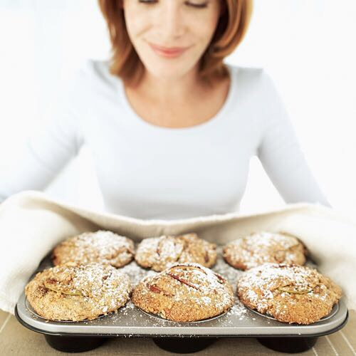
" ... сегодня мой день!",

" ... этого не может быть, ведь я на всём сэкономила!?"
И лишь на второй, третий раз начинаешь понимать, что на самом деле помогает получать такой высокий натуральный результат. Неужели мука!?
Мука торговой марки СПЕЦПОМОЛ® начиная с 2006 года производилась исключительно для макаронной фабрики МАКРОНА. На качество муки СПЕЦПОМОЛ® главным образом оказало влияние огромное желание команды фабрики сделать отличные, качественные и самые вкусные макароны. И, похоже, им это удалось!
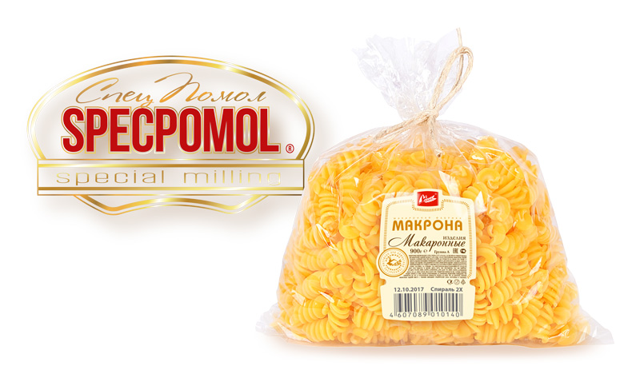
Первое, что потребовалось преодолеть, это страх подняться выше рынка по себестоимости самой муки, ведь "конфетку" собирались делать не из дешевого зерна, а из высококлассного, наиболее подходящего по своим свойствам к макаронам, категорически отказавшись от всех возможных и невозможных добавок.
Такое зерно всегда есть на нашем рынке, только большая его часть используется мельниками, да и экспортёрами тоже, как улучшитель для смешивания с низкими сортами пшеницы и стоит оно не дёшево.
Российское высококлассное зерно, вопреки расхожему мнению, не экспортируется в значительном объёме и в чистом виде в те страны, где умеют ценить качество, они доверяют только своим экологически чистым производствам. Но вот рядовая, относительно недорогая "четвёрка" как раз подходит под Евростандарт, ведь большая часть пищевых промышленных технологий за рубежом применяет огромную линейку различных дешёвых синтетических улучшителей и добавок, позволяющих достигать неестественно высоких, зрительно, результатов в кулинарии. Только вот здоровья такая еда не прибавляет....
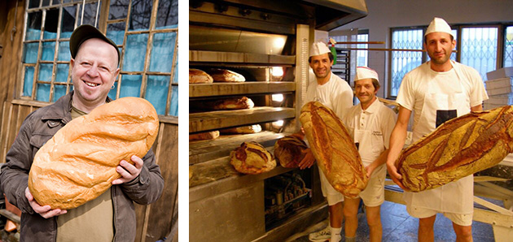
Но, мало получить дорогое и качественное зерно, важно не загубить его бездарным помолом. Вот над помолом-то и пришлось поколдовать.
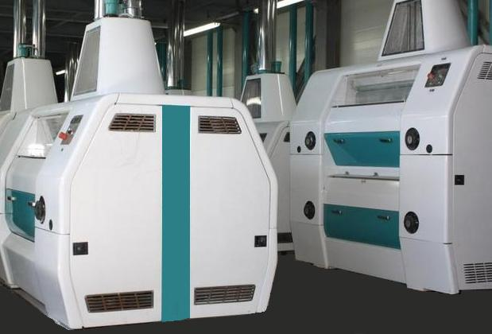
Все известные приёмы мельничного искусства, которые исходят из экономии и бережливости ещё с советских времён, пришлось отодвинуть на третий план. Во главу угла было поставлено МАКСИМАЛЬНОЕ качество по всем показателям.
Обычно для получения Гостовских характеристик муки используют смеси, помольные партии из разных сортов, как низких классов пшеницы, так и высококлассную пшеницу, улучшитель. При этом зерно, как правило, смешивается самое различное, лишь бы дотянуться до стандартных показателей и добиться максимальной экономии, в итоге получается стандартная мука общего помола с нестабильным качеством.
От этого принципа решено было отказаться изначально и бесповоротно.
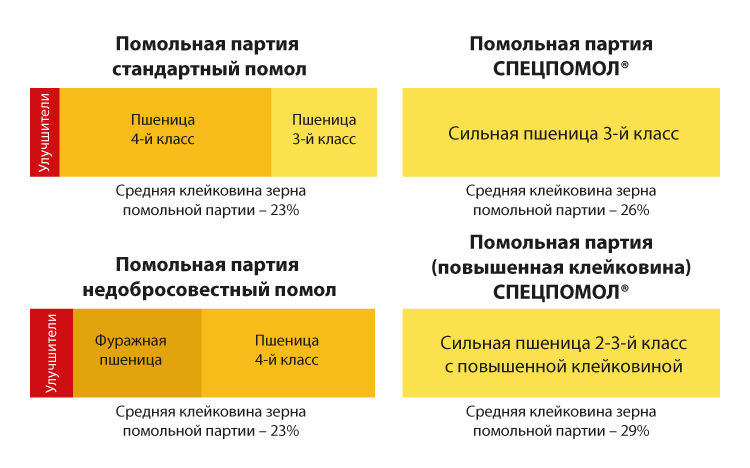
Каждый сорт муки СПЕЦПОМОЛ® делается только из одного соответствующего сорта высококлассного зерна пшеницы. Для исключения колебаний хлебопекарных свойств и придания им стабильно высокого качества, выбирается зерно с одинаково высокой натурой, стекловидностью, крупностью, благодаря чему удаётся получить высокий показатель по клейковине.
Тщательная мойка зерна перед размолом, его двухэтапное увлажнение и отволаживание, а так же большое количество ступеней помола, максимально убирает зольность, придаёт муке необыкновенную яркость, высокую белизну и особо тонкий помол.
Даже в муке из твёрдой пшеницы удалось полностью избавиться от вкраплений, характерных для не очень качественного помола, наличие которых в нашей стране является косвенным доказательством того, что мука из твёрдых сортов. И этот показатель очень характерен потому, что помол твёрдого зерна гораздо сложнее и капризней.
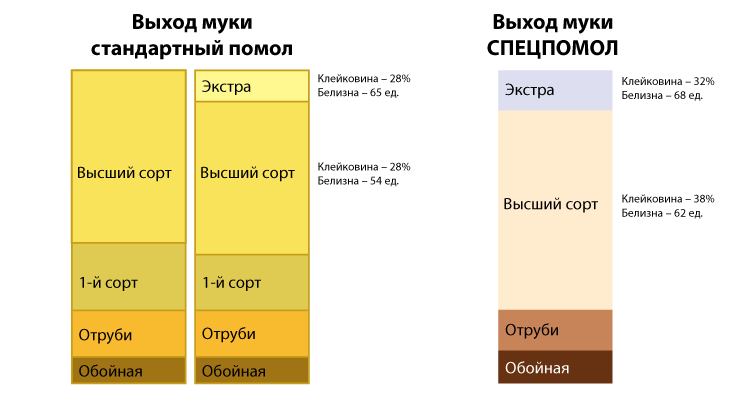
Полное отсутствие каких-либо посторонних добавок выделяет все сорта муки СПЕЦПОМОЛ® заметно сильным натуральным ароматом зрелой пшеницы и позволяет воплощать любые изысканные и оригинальные задумки технологов и кулинаров любого уровня.
Конечно, получив такой деликатный и качественный продукт нельзя было удержаться и не попробовать муку СПЕЦПОМОЛ® в хлебопекарном, кондитерском производстве и в HoReCa.
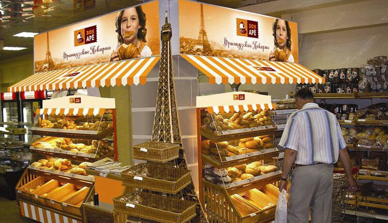
Успех оказался ошеломляющим! Поначалу технологи даже отказывались верить, что это натуральный продукт, слишком неожиданным получался результат.
Большим стимулом к совершенствованию качества муки СПЕЦПОМОЛ® стало присоединение к торгово-промышленному холдингу АМБАР, куда входят макаронная фабрика МАКРОНА и мельница, небольшой сети ресторанов и кафе с кондитерским производством.
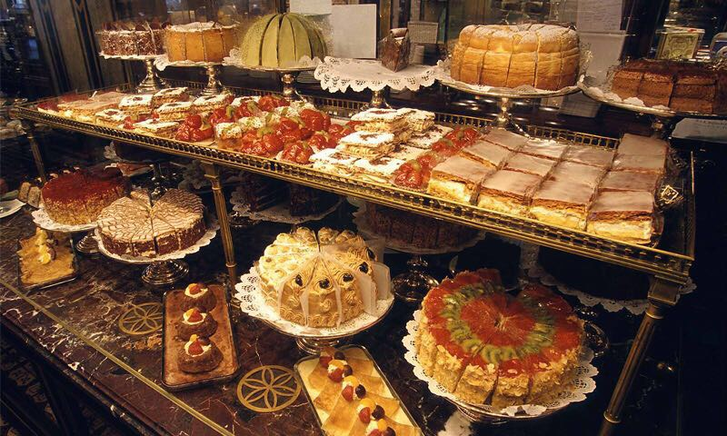
Здесь-то с пристрастием проверяются и отрабатываются показатели муки СПЕЦПОМОЛ® на рецептах лучших блюд.
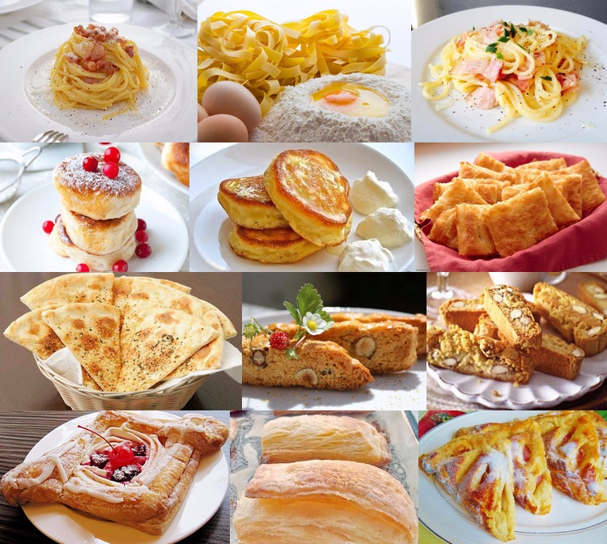
Особенно вкусными и традиционно правильными получаются итальянская выпечка: фокачча, пицца, чиабатта; кондитерка: кантуччини, датское слоёное тесто; необыкновенно яркая и сытная яичная паста, а русские оладья выходят превосходно – пышные и ароматные.
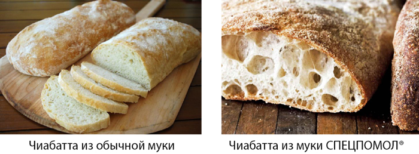
Особым секретом в использовании муки СПЕЦПОМОЛ® стало добавление в тесто большего количества воды, чем в тесто из обычной муки, так как повышенная клейковина её впитывает больше, и увеличение времени расстаивания теста, чтобы дать муке максимально реализовать свой потенциал.
А главное – необходимо полностью отказаться от всех улучшителей, разрыхлителей и различных ненатуральных добавок, которые нейтрализуют, сводят к нулю, а иногда даже делают недостатками все выдающиеся достоинства муки СПЕЦПОМОЛ®.
Качество муки СПЕЦПОМОЛ® не обошлось без внимания известных производителей пищевой промышленности, там специалисты отмечают удобство её применения, стабильное качество и способность сглаживать и прощать ошибки технологов. А в некоторых случаях муку СПЕЦПОМОЛ® даже используют как улучшитель теста.
Вот такая она замечательная, но, к сожалению редкая, эта мука СПЕЦПОМОЛ®.
Мельничный комплекс расположен в Ставропольском крае и использует зерно урожая с собственных экологически чистых полей. Для посева применяется только суперэлитный и элитный посевной материал, а для улучшения земель, вместо химических удобрений, применяются органические, активно используются лучшие предшественники: пар, многолетние травы, горох, рапс.
На мельнице установлено оборудование швейцарской фирмы Buhler.
Основной объём производства приходится на помол твёрдых сортов пшеницы Гордеиформе №010, в основном сорта Кубанка.
Главные показатели муки из твёрдых сортов отвечают всем требованиям, предъявляемым технологами макаронной фабрики МАКРОНА, отличаются качеством помола, высокой степенью очистки от отрубных частиц и полностью удовлетворяют потребности производства макаронных изделий группы А.
Для более низких сортов Б и В используются сильные сорта стекловидной мягкой пшеницы высокого второго и третьего класса.
Мука СПЕЦПОМОЛ® имеет свой собственный высокий стандарт качества, значительно превышающий ГОСТовские значения показателей.
Большой резонанс получило использование муки СПЕЦПОМОЛ® в хлебопекарном и кондитерском производстве, а также в HoReCa и домашней кулинарии.
Мука СПЕЦПОМОЛ® из мягкой пшеницы уникальна по своим значениям белизны (62-65 высший сорт, 68-75 сорт "Экстра") и клейковины (34-40 высший сорт, 30-32 сорт "Экстра"), что позволяет безо всяких добавок получать высокий натуральный результат по всем показателям качества продукции, где бы она не применялась.
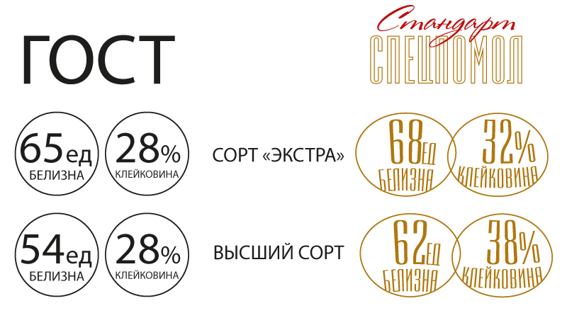
Пшеничная цельнозерновая мука СПЕЦПОМОЛ® на порядок отличается от цельнозерновой муки конкурентов, зачастую вырабатываемой из низкоклассного зерна на том же оборудовании, что и вся остальная мука. Цельнозерновая мука СПЕЦПОМОЛ® делается из сильной пшеницы на отдельном специальном оборудовании. Перед размолом зерно тщательно промывается в помывочной машине, где выщепляются минеральные и легкие примеси, проходит двойную антисептическую обработку для исключения возможного обсеменения отрубистых частиц нежелательными для человека микроорганизмами.
Цельнозерновая мука СПЕЦПОМОЛ® выделяется своими повышенными вкусовыми, целебными свойствами, а так же более сильным положительным, нежели отрицательным, воздействием на организм человека (поскольку по сей день не утихают споры о пользе или вреде цельнозерновой муки).
Мука СПЕЦПОМОЛ® выпускается следующих сортов: пшеничная твёрдых сортов Дурум повышенной степени очистки с высокой клейковиной и ярким янтарным оттенком; пшеничная сорт "Экстра" особо тонкого помола с высокими клейковиной и белизной; пшеничная высший сорт с высокими клейковиной и белизной; пшеничная цельнозерновая из сильной пшеницы.
На очереди, после нового урожая, выпуск ещё двух видов продукции СПЕЦПОМОЛ® - крупа Арнаутка из сильной твёрдой пшеницы и полбяная мука.
Все сорта муки СПЕЦПОМОЛ® поставляются на европаллетах в полипропиленовых мешках по 50, 25, 10 килограмм и фасованные в бумажные пакеты по 2 и 1 килограмму.
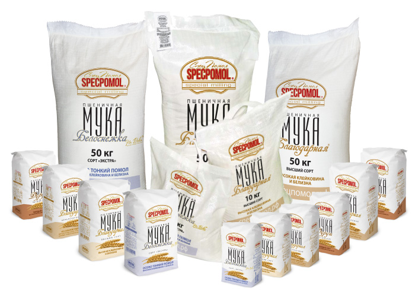
Приглашаем всех ценителей высокого качества и здоровой пищи оценить нашу большую работу и присоединиться к творческой команде профессионалов СПЕЦПОМОЛ®.
Мы надеемся, что мука СПЕЦПОМОЛ® понравится всем и нам удастся порадовать потребителей отличными результатами наших совместных усилий.
Пшеничная мука сорт «Экстра»
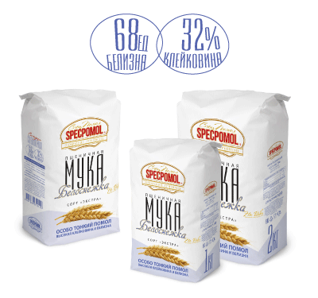
Идеальна для выпечки пиццы, фокаччи, сдобных изделий, слоёного теста, яичной пасты, пирогов, печений, кексов, блинов, оладий.
ВНИМАНИЕ! Тесто из муки с сильной клейковиной требует большего количества воды и времени расстаивания.
Изготовлена из сильной мягкой пшеницы, выращенной на экологически чистых землях, без применения химических удобрений и пестицидов, с использованием лучших предшественников: пар, многолетние травы, горох, рапс. Многоступеньчатый качественный помол без добавок, отбеливателей и улучшителей, с повышенным содержанием клейковины и очень высокой белизной.
Пшеничная мука Высший сорт
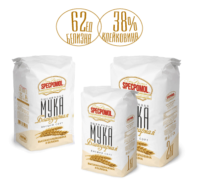
Отлично подходит для всех видов домашней выпечки: различных видов хлеба, сдобных изделий, пирогов, кексов, блинов, оладий.
ВНИМАНИЕ! Тесто из муки с сильной клейковиной требует большего количества воды и времени расстаивания.
Изготовлена из сильной мягкой пшеницы, выращенной на экологически чистых землях, без применения химических удобрений и пестицидов, с использованием лучших предшественников: пар, многолетние травы, горох, рапс. Многоступеньчатый качественный помол без добавок, отбеливателей и улучшителей, с очень высоким содержанием клейковины и высокой белизной.
Пшеничная мука Цельнозерновая
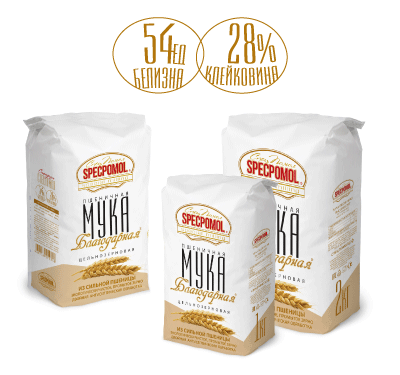
Для приготовления всех видов домашней выпечки: оладьев, блинов, хлеба, пирожков.
Изготовлена на отдельном оборудовании из сильной мягкой пшеницы третьего класса, выращенной на экологически чистых землях, без применения химических удобрений и пестицидов, с использованием лучших предшественников: пар, многолетние травы, горох, рапс.
Перед размолом проходит двойную антисептическую обработку.
Содержит повышенное количество клетчатки, витамины B и E, минералы и микроэлементы (такие, как железо и марганец), белки. В отличие от белой муки, которая содержит только внутреннюю часть зерна (крахмал), цельнозерновая мука считается более полезной.
Пшеничная мука Дурум
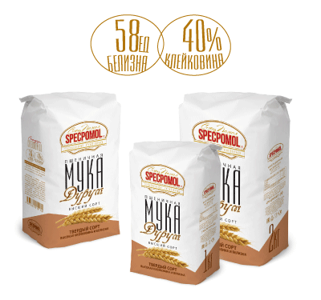ИДЕАЛЬНА для домашней пасты, итальянской пиццы, хлеба, пельменного теста, десертов и штруделей. Изготовлена из сильной твёрдой пшеницы, выращенной на экологически чистых землях, без применения химических удобрений и пестицидов, с использованием лучших предшественников: пар, многолетние травы, горох, рапс. Многоступеньчатый качественный помол без добавок, отбеливателей и улучшителей, с очень высоким содержанием клейковины, высокой степенью очистки и ярким янтарным оттенком.
Заказ на продукцию можно оформить здесь